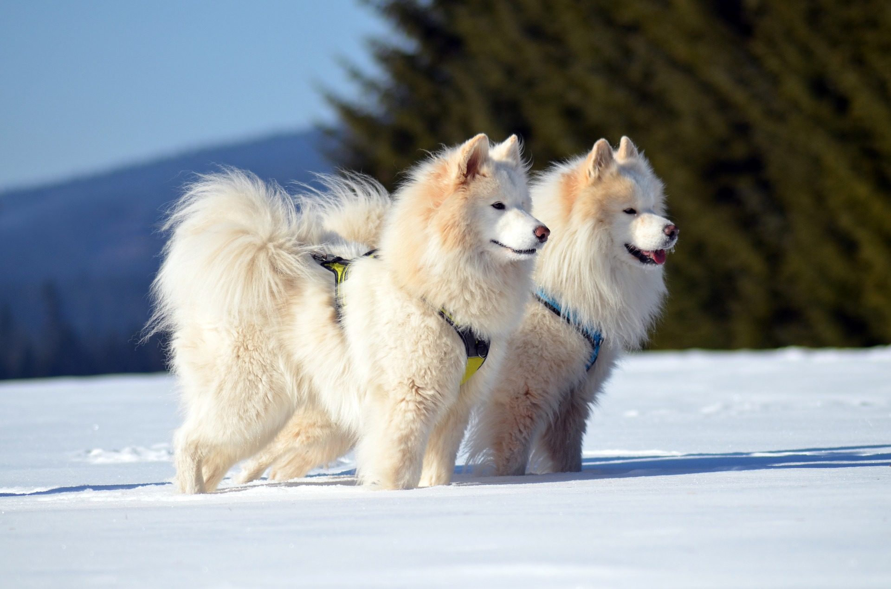

Summit Farms
Caring for Alaskan Dogs
Training Tips

- Establish a regular schedule for eating, sleeping, and bathroom breaks.
- Crate Training. Place crate in a an area around people and make sure it's comfortable for the dog.
- Socialize the dog with other vaccinated dogs at a young age.
- Keep the dog active using a variety of games to prevent them from getting bored.
- Be paitent with obedience training and give out frequent rewards for following commands,
- Keep training sessions short but frequent, such as five or six 10-minute sessions a day.
- Train dog in multiple environments. For example, different rooms in the house or outside on a leash.
- Consider training classes
Grooming
- Brush fur frequently because Alaskan dogs shed a lot.
- Trim nails every few weeks.
- Dogs will have "shedding season" twice a year where they'll shed extra.
- Make sure to brush both their heads and legs.
- Trim fur between paw pads.
- Bath every 4-6 weeks.
- Brush at least once every three days.
- Check eyes daily and check ears once a week.
Health
- Life span of 11-14 years.
- Lack of frequent excercise can lead to obesity.
- Adult dogs weigh anywhere between 20-80 pounds depending on the breed.
- Dental disease is the most common chronic problem.
- Height of fully grown dogs typically are between 15-22 inches
- Take any new dog to the vet within 30 days. Try to schedule normal check-ups once or twice a year.
- Spaying or neutuering Alaskan Dogs decreases the odds of certain cancers.
Nutrition
- 1-2 cups of dog food a day for puppies.
- Feed them 2-3 portions a day.
- Adult dogs will need 3-4 cups of dog food a day.
- Alaskan dogs require a high protein, high fat diet with low carbohydrate needs.
- Include seeds, fuits, and vegetables as sources of complex carbohydrates.
- Avoid letting dog eat human food.
- 90% of the dog's diet should be dog food.
- Feeding the dog unfrozened, raw fresh beef once a week is beneficial for it's health.
Back to top